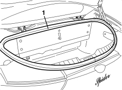
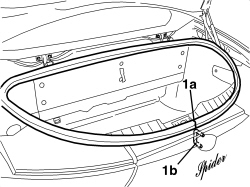

7025B66 BOOT COMPARTMENT SEAL - R+R
- Path
- Procedures > 70 FITTINGS > 7025 COMPARTMENT COVERS > 7025B BOOT LID > 7025B66 BOOT COMPARTMENT SEAL - R+R
- Kind
- repair procedure (removal / refitting; the operation number is the code)
- Applies to
- engines: 2.2 JTS, 3.2 JTS; all production periods
- Interactive page
- https://sloeber94.github.io/elrnDB-aBrrSpdr/en/#/946004071
Applies to: engines: 2.2 JTS, 3.2 JTS; all production periods
 Removing
Removing
 Refitting
Refitting- Open the boot lid.
1. Remove the perimeter seal releasing it from the housing.

Applies to: engines: 2.2 JTS, 3.2 JTS; all production periods
Refitting
Removing- Check that the seal is intact and there are no signs of damage.
1. Place the seal in position so that the join (1a) is in line with the lock striker (1b).

Applies to: engines: 2.2 JTS, 3.2 JTS; all production periods
- Check that the contact between the seal and the boot lid is correct.